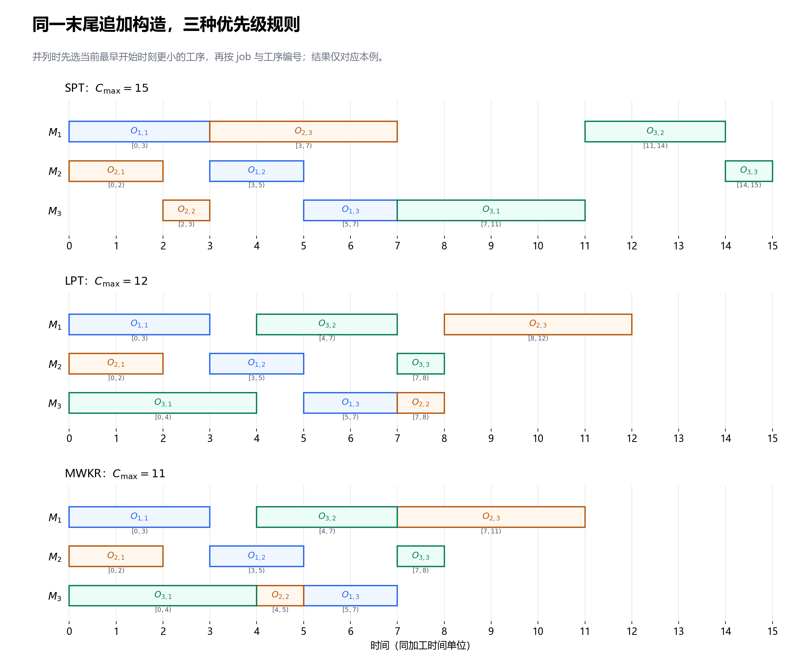
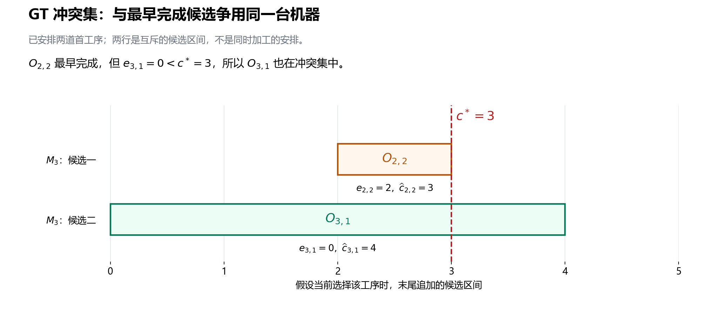
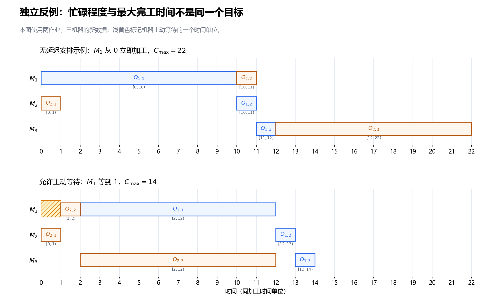

第 5 节：构造启发式——SPT、LPT、MWKR 与排程生成¶
状态：第一版，待 review。
本节目标：能从空排程逐步构造一组可行机器顺序，手算 SPT、LPT、MWKR 的选择，区分优先级规则与排程生成框架，并理解半主动、主动、无延迟排程的区别。
前置：第 4 节：关键路径、head/tail、松弛量与关键块。继续采用相同基础模型：所有 job 在时间 0 可投入，加工时间为正，机器始终可用，工序不可抢占，允许工序等待与机器空闲；没有换型、运输、故障或额外交期约束。
5.1 现在不再给机器队列：第一道应该选谁？¶
前面几节已经知道：给定完整机器队列，可以判环、解码，再分析关键路径。但搜索通常要从一个可行解出发，不能一直等待别人把队列交给我们。
构造启发式 从空排程开始，每次作出一个局部选择，逐步形成完整排程。它首先解决“快速得到可行解”，解的质量则取决于构造过程中的选择。
仍使用原来的 3×3 数据。每个单元格给出工序、指定机器与加工时间：
| Job | 第一道工序 | 第二道工序 | 第三道工序 |
|---|---|---|---|
| \(J_1\) | \(O_{1,1}\)：\((M_1,3)\) | \(O_{1,2}\)：\((M_2,2)\) | \(O_{1,3}\)：\((M_3,2)\) |
| \(J_2\) | \(O_{2,1}\)：\((M_2,2)\) | \(O_{2,2}\)：\((M_3,1)\) | \(O_{2,3}\)：\((M_1,4)\) |
| \(J_3\) | \(O_{3,1}\)：\((M_3,4)\) | \(O_{3,2}\)：\((M_1,3)\) | \(O_{3,3}\)：\((M_2,1)\) |
工艺路线依次为每个 job 的第一、第二、第三道工序。现在机器队列尚未确定；初始可考虑的工序是 \(O_{1,1}\)、\(O_{2,1}\)、\(O_{3,1}\)，不能直接选择后面的工序。
若只看眼前加工时间，最短的是 \(O_{2,1}\)，最长的是 \(O_{3,1}\)。若看整个 job 尚未安排的工作量，三个 job 分别还有 \(7\)、\(7\)、\(8\)，又会偏向 \(J_3\)。这正是不同优先级规则的出发点。
5.2 一条优先级规则，还不是一个完整算法¶
优先级规则（priority rule / dispatching rule）负责比较候选工序。例如 SPT 说“较短的当前工序优先”，但这句话还没有交代：
- 候选是所有未安排工序，还是每个 job 的下一道工序？
- 在所有候选中比较，还是只比较某一台机器上的候选？
- 选中工序以后，放在机器队列末尾，还是插入已有空档？
- 分数相同怎么办？允许为了未来工序主动等待吗？
排程生成框架 决定这些问题。本节先完整定义一个末尾追加框架，再介绍通过冲突集筛选候选的 Giffler–Thompson（GT）框架。
因此，报告一个构造方法时，应同时说明：候选集、优先级、并列处理、放置方式。只写“用了 SPT”，不能唯一复现排程。Ingimundardottir 与 Runarsson 的原始研究将 SPT、LPT、MWKR 等作为派工规则，并讨论构造状态中的加工时间、剩余工作量和机器可用时刻。
本节是在离线规划中逐步填写时间表。“选择一道工序”表示决定它的加工位置和时间，不表示车间此刻真的开始执行它。
5.3 SPT、LPT、MWKR 分别在看什么？¶
设 \(J_j\) 有 \(n_j\) 道工序，本例 \(n_j=3\)。对候选工序 \(O_{j,k}\)，定义当前工序及其后续工序的总加工量：
这里的 \(\ell\) 是求和索引。\(R_{j,k}\) 包含当前工序，不包含已经安排的前序；即使那些前序在真实车间尚未加工，它们也已经退出本构造过程的“未安排工作量”。
| 规则 | 英文全称 | 在候选中优先选择 | 直觉 |
|---|---|---|---|
| SPT | Shortest Processing Time | \(p_{j,k}\) 最小 | 先处理眼前较短的加工 |
| LPT | Longest Processing Time | \(p_{j,k}\) 最大 | 先处理眼前较长的加工 |
| MWKR | Most Work Remaining | \(R_{j,k}\) 最大 | 优先推进后面尚有较多工作的 job |
注意 LPT 看的是当前工序，不是 job 的总长度；MWKR 看的是剩余加工时间之和，不是剩余工序的数量。不同文献对规则缩写和组合方式可能有差异，本节以这张表为准。
本例的剩余工作量可预先按 job 反向累加：
| Job | \(R_{j,1}\) | \(R_{j,2}\) | \(R_{j,3}\) |
|---|---|---|---|
| \(J_1\) | 7 | 4 | 2 |
| \(J_2\) | 7 | 5 | 4 |
| \(J_3\) | 8 | 4 | 1 |
例如安排 \(O_{2,1}\) 后，\(J_2\) 下一次参与比较的值从 7 变成 5；安排 \(O_{2,2}\) 后，又变成 4。不能始终拿原始总工作量 7 比较。
\(R_{j,k}\) 也不同于上一节的 tail \(q_{j,k}\)。它只沿自己的工艺路线累加，而且包含当前工序；tail 排除自身时长，并考虑固定图中跨 job 的机器依赖。机器顺序还没有完成时，也不能直接套用前一完整解的 tail 来解释本节的 MWKR。
5.4 末尾追加构造：候选、状态、时间和更新¶
用 \(t\) 表示构造步骤，\(E^{(t)}\) 表示该步的候选集：对每个尚未全部安排的 job，只取它的 第一道未安排工序。这样每个 job 至多提供一个候选。
候选的工艺前序已经安排了，但未必在车间已经完成。因此 \(E^{(t)}\) 是“前序已安排”的集合，不是某个实际时刻“全部能立刻开工”的集合。
维护两个状态量：
| 状态 | 含义 | 初始值 |
|---|---|---|
| \(b_j\) | \(J_j\) 已安排前缀中最后一道工序的完成时刻 | 0 |
| \(a_r\) | \(M_r\) 已安排队列中最后一道工序的完成时刻 | 0 |
对候选 \(O_{j,k}\)，若 \(\mu_{j,k}=M_r\)，在机器队列末尾追加时的最早开始、候选完成时刻为：
\(e_{j,k}\)、\(\widehat c_{j,k}\) 只是当前状态下假设选择该候选的时刻。未选中的候选没有被安排；其他选择更新状态后，它们的候选时间可能改变。
选中 \(O_{j,k}\) 后，执行：
同时把 \(O_{j,k}\) 放到 \(M_r\) 队列末尾，将 \(J_j\) 的候选推进到下一道工序；若整个 job 已安排完，就不再提供候选。每一步只安排一道真实工序。
本节的末尾追加框架在整个 \(E^{(t)}\) 中使用优先级规则。主指标并列时，依次选择：
- 当前 \(e_{j,k}\) 更小的工序；
- job 编号 \(j\) 更小的工序；
- 工序编号 \(k\) 更小的工序。
这是本节为复现结果作出的算法约定。对于三种规则，可以统一写成按以下比较键取最小值：
这里按字典序比较：前一项不同时就决定大小，相同时才比较下一项。不是把这几个数相加，也不是先选择最早能开始的工序，再应用主规则。
5.5 完整手算：用 MWKR 从空排程构造原来的解¶
下面每个候选后面的二元组是 \((R_{j,k},e_{j,k})\)，先比较剩余工作量，再按上面约定处理并列。
| 步骤 | 候选及 \((R_{j,k},e_{j,k})\) | 选中工序 | 加工区间 | 选择原因 |
|---|---|---|---|---|
| 1 | \(O_{1,1}:(7,0)\)；\(O_{2,1}:(7,0)\)；\(O_{3,1}:(8,0)\) | \(O_{3,1}\) | \([0,4)\) | 剩余工作量 8 最大 |
| 2 | \(O_{1,1}:(7,0)\)；\(O_{2,1}:(7,0)\)；\(O_{3,2}:(4,4)\) | \(O_{1,1}\) | \([0,3)\) | 两个 7 并列，开始时刻也相同，取 \(J_1\) |
| 3 | \(O_{1,2}:(4,3)\)；\(O_{2,1}:(7,0)\)；\(O_{3,2}:(4,4)\) | \(O_{2,1}\) | \([0,2)\) | 剩余工作量 7 最大 |
| 4 | \(O_{1,2}:(4,3)\)；\(O_{2,2}:(5,4)\)；\(O_{3,2}:(4,4)\) | \(O_{2,2}\) | \([4,5)\) | 剩余工作量 5 最大 |
| 5 | \(O_{1,2}:(4,3)\)；\(O_{2,3}:(4,5)\)；\(O_{3,2}:(4,4)\) | \(O_{1,2}\) | \([3,5)\) | 三个 4 并列，最早开始 3 最小 |
| 6 | \(O_{1,3}:(2,5)\)；\(O_{2,3}:(4,5)\)；\(O_{3,2}:(4,4)\) | \(O_{3,2}\) | \([4,7)\) | 两个 4 并列，最早开始 4 更小 |
| 7 | \(O_{1,3}:(2,5)\)；\(O_{2,3}:(4,7)\)；\(O_{3,3}:(1,7)\) | \(O_{2,3}\) | \([7,11)\) | 剩余工作量 4 最大 |
| 8 | \(O_{1,3}:(2,5)\)；\(O_{3,3}:(1,7)\) | \(O_{1,3}\) | \([5,7)\) | 剩余工作量 2 更大 |
| 9 | \(O_{3,3}:(1,7)\) | \(O_{3,3}\) | \([7,8)\) | 只剩一个候选 |
挑两步把状态更新展开。
步骤 4 之前，三个 job 的已安排前缀完成时刻为 \((b_1,b_2,b_3)=(3,2,4)\)，三个机器队列的末尾完成时刻为 \((a_1,a_2,a_3)=(3,2,4)\)。选中的 \(O_{2,2}\) 使用 \(M_3\)，所以：
更新 \(b_2=5\)、\(a_3=5\)。下一步的 \(O_{1,2}\) 使用 \(M_2\)，所以：
步骤 5 比步骤 4 更晚作出决定，却把工序放在更早的开始时刻。构造步骤不是车间统一推进的时间轴；在其他机器上填写较早的加工区间完全合法。
最终形成的机器队列为：
恰好重建前几节的排程：\(C_1=7\)、\(C_2=11\)、\(C_3=8\)，\(C_{\max}=11\)。这说明它能由一个明确的构造过程得到，不能据此断定 MWKR 对所有实例最好。
5.6 为什么末尾追加一定能给出可行解？¶
证明可以沿构造步骤归纳，假设此前安排的工序已经可行。
工艺方面：候选只取每个 job 的第一道未安排工序，前一道已经安排；令 \(s_{j,k}\ge b_j\)，就不会在工艺前序完成之前开始。首道工序的 \(b_j=0\)。
机器方面：工序只放到指定机器队列末尾，令 \(s_{j,k}\ge a_r\)，就不会与该机器先前安排的加工重叠。队列末尾之外此前没有已安排工序，新加入的区间不会破坏旧区间。
于是新安排仍可行。只要有未完成的 job，它就能提供一个候选；每步安排一道工序，经过全部工序数量那么多步，构造结束。
从图的角度也能理解：给工序标上其构造步骤编号，工艺弧和追加产生的机器弧都从较小编号指向较大编号，因此真实工序之间不可能形成有向环。这与第 2 节的可行性结论一致。
对最终机器队列，每道工序仍满足“工艺前序完成、机器前序完成”两者取最大值的递推；后来追加的工序不会改变它的前序。因此，本构造给出的时间也就是第 3 节 decoder 对这些最终队列算出的最早时间。
这个保证来自候选限制和放置方式，不是来自 MWKR 分数。换成 SPT、LPT 或随机选候选，按同一框架也能构造可行解。若任意给各台机器分别排序，失去这套一致的构造过程，就仍可能出现第 2 节那样的跨机器有向环。
5.7 同一个构造框架，换规则会发生什么？¶
保留候选集、末尾追加方式和并列处理，只换主指标。各步选中的工序如下，供独立手算复现：
| 步骤 | SPT | LPT | MWKR |
|---|---|---|---|
| 1 | \(O_{2,1}\) | \(O_{3,1}\) | \(O_{3,1}\) |
| 2 | \(O_{2,2}\) | \(O_{1,1}\) | \(O_{1,1}\) |
| 3 | \(O_{1,1}\) | \(O_{3,2}\) | \(O_{2,1}\) |
| 4 | \(O_{1,2}\) | \(O_{2,1}\) | \(O_{2,2}\) |
| 5 | \(O_{1,3}\) | \(O_{1,2}\) | \(O_{1,2}\) |
| 6 | \(O_{2,3}\) | \(O_{1,3}\) | \(O_{3,2}\) |
| 7 | \(O_{3,1}\) | \(O_{2,2}\) | \(O_{2,3}\) |
| 8 | \(O_{3,2}\) | \(O_{2,3}\) | \(O_{1,3}\) |
| 9 | \(O_{3,3}\) | \(O_{3,3}\) | \(O_{3,3}\) |
| 规则 | \(C_1\) | \(C_2\) | \(C_3\) | \(C_{\max}\) |
|---|---|---|---|---|
| SPT | 7 | 7 | 15 | 15 |
| LPT | 7 | 12 | 8 | 12 |
| MWKR | 7 | 11 | 8 | 11 |

图中颜色继续按 job 区分，区间端点和工序下标与手算一致。它展示本例的构造结果，不表示规则的一般性能排序。
SPT 的前两步很值得看：先安排 \(O_{2,1}=[0,2)\)，再把短工序 \(O_{2,2}\) 安排到 \(M_3\) 的 \([2,3)\)。此时 \(O_{3,1}\) 虽能从 0 开始，却没有被选择。之后 \(O_{1,3}\) 又排到 \(M_3\) 的 \([5,7)\)，才轮到 \(O_{3,1}=[7,11)\)，最终把 \(J_3\) 推到 15 完成。
这是离线规划中提前决定未来位置的结果。不能把“SPT”理解为车间每台空闲机器立刻从已到达队列中选最短工序；后者是另一种候选与时间推进方式，未必得到这张图。
并列规则也会改变结果。MWKR 的步骤 6 中，\(O_{2,3}\) 与 \(O_{3,2}\) 的剩余工作量同为 4。本节先比较 \(e_{j,k}\)，选择能在 4 开始的 \(O_{3,2}\)。如果整个构造改成主指标并列时直接按 job 编号选择，则会先安排 \(O_{2,3}=[5,9)\)，后面的 \(O_{3,2}\)、\(O_{3,3}\) 变为 \([9,12)\)、\([12,13)\)，得到 \(C_{\max}=13\)。
因此，这个简单实验支持的是“选择会改变队列和结果”，而不是“某个缩写天然保证较小的 makespan”。
5.8 半主动、主动、无延迟：三个不同的要求¶
这些术语描述排程结构，不是对算法名字的评价。本小节仍只讨论本节基础模型。
| 类型 | 中文直觉 | 精确关注点 |
|---|---|---|
| Semi-active，半主动排程 | 固定当前机器顺序，已经尽量靠左 | 保持机器加工顺序时，不能把工序进一步提前 |
| Active，主动排程 | 连换一个更早的位置也无法无代价提前 | 不存在能提前某道工序、又不推迟其他工序的可行移动；允许改变机器顺序 |
| Non-delay，无延迟排程 | 有工序能立即加工，就不让相应机器主动等着 | 机器空闲时，不存在工艺前序已完成、可立即在该机器开工的待加工工序 |
前面定义的末尾追加构造得到固定队列的最早排程，因此保证半主动。它不保证主动，因为先前留下的空档没有被用于插入后来选择的工序。
例如本例 LPT 构造的 \(M_3\) 队列是：
\(O_{2,2}\) 的工艺前序在 2 完成，而 \(M_3\) 的 \([4,5)\) 空档能放下它。把 \(O_{2,2}\) 改放到 \([4,5)\)，其余工序保持原时间，仍然可行。这改变了机器队列，却没有推迟任何工序，所以原 LPT 排程不是主动排程。
在本节基础模型下，这些排程集合满足：
“更严格”指可选排程集合更小，不表示从这个集合随便取一个解，就一定优于较大集合里的某个解。
对于最小化 \(C_{\max}\)，主动排程集合中至少存在一个最优解；这并不表示每个最优排程都必须主动，因为不影响最终完工的分支有时仍可保留等待。Giffler 与 Thompson 的原始论文说明了主动排程生成及最优解可由主动排程代表的性质。无延迟排程集合则可能排除全部最优解，第 5.10 小节会给出可手算反例。
5.9 Giffler–Thompson：先找关键的机器冲突，再用规则选择¶
GT 同样维护每个 job 的第一道未安排工序，以及 \(b_j\)、\(a_r\)。不同之处是，它先筛选一个 冲突集，主优先级规则只在这个集合内比较。
在第 \(t\) 步，对全部 \(E^{(t)}\) 计算 \(e_{j,k}\) 与 \(\widehat c_{j,k}\)，然后执行：
- 找候选完成时刻最小的工序，记为 \(O^*\)；本节完成时刻并列时，依次比较 \(e_{j,k}\)、\(j\)、\(k\)。
- 记 \(c^*=\widehat c_{O^*}\)、\(M^*=\mu_{O^*}\)，分别为它的候选完成时刻和指定机器。
- 构造冲突集 \(K^{(t)}\)：使用 \(M^*\)，且候选开始时刻严格小于 \(c^*\) 的候选工序。
- 在 \(K^{(t)}\) 内使用 SPT、LPT、MWKR 及本节并列约定，选一道工序按末尾追加方式安排；然后更新状态。
写成集合为：
\(O^*\) 自身一定在集合内，因为 \(p_{O^*}>0\)，所以 \(e_{O^*}<\widehat c_{O^*}\)。不会遇到冲突集为空。
为什么要看“最早完成”，又为什么允许选其他工序？\(O^*\) 标出了一次最早可能完成的加工，它对应的机器必须决定：先让这道工序加工，还是先让另一个会与它争用该机器的候选加工。冲突集把这个局部排序选择集中起来。
最早完成候选不等于最终选中工序。前者用于确定机器与冲突集，后者才由优先级决定。这里的“冲突”也不表示排程已经违反容量约束；它描述尚未确定的候选先后关系。
手算一个关键步骤。按 GT，第一步只会安排 \(O_{2,1}=[0,2)\)；第二步安排 \(O_{1,1}=[0,3)\)。第三步的状态为 \((b_1,b_2,b_3)=(3,2,0)\)、\((a_1,a_2,a_3)=(3,2,0)\)，于是：
| 候选工序 | 指定机器 | \(p_{j,k}\) | \(R_{j,k}\) | \(e_{j,k}\) | \(\widehat c_{j,k}\) |
|---|---|---|---|---|---|
| \(O_{1,2}\) | \(M_2\) | 2 | 4 | 3 | 5 |
| \(O_{2,2}\) | \(M_3\) | 1 | 5 | 2 | 3 |
| \(O_{3,1}\) | \(M_3\) | 4 | 8 | 0 | 4 |
最早完成候选是 \(O_{2,2}\)，故 \(c^*=3\)、\(M^*=M_3\)。冲突集却有两道工序：

图中两行是分别假设选中各候选时的区间，不能把它们当成同时在 \(M_3\) 上加工的可行安排。
此时 SPT 会选 \(O_{2,2}\)，LPT 与 MWKR 会选 \(O_{3,1}\)。选中后只安排这一道；另一道保留到后续步骤重新计算时间。例如 MWKR 安排 \(O_{3,1}=[0,4)\) 后，\(O_{2,2}\) 的候选开始时刻会从 2 变为 4。
不等式采用严格小于。若同机候选恰好满足 \(e_{j,k}=c^*\)，它可以等 \(O^*\) 完成后立即开始，本轮不把它作为这次冲突的成员。
在无换型时间的本节模型下，完整 GT 构造得到主动排程；这里不是“在所有候选中任意选择并追加”的版本。Artigues、Lopez 与 Ayache 的原始研究稿第 2.3 小节明确给出了无换型时间下的追加式 GT、冲突集及主动性性质。
把本节三种规则分别与 GT 配合，完整构造本例得到：
| 主规则 | 全部候选直接比较、末尾追加 | GT 冲突集内比较、末尾追加 |
|---|---|---|
| SPT | \(C_{\max}=15\) | \(C_{\max}=15\) |
| LPT | \(C_{\max}=12\) | \(C_{\max}=13\) |
| MWKR | \(C_{\max}=11\) | \(C_{\max}=11\) |
GT 的 LPT 构造虽然得到主动排程，仍比本例直接追加的 LPT 排程更差。这与集合关系不矛盾：它们选择了不同的机器队列，而主动性不是对任意两个解作目标值比较的保证。
GT 每步选一次、一直走到结束，是构造启发式。若把冲突集内的全部选择展开为分支，才是在探索一棵搜索树；不能把单次固定规则的构造等同于枚举全部主动排程。
5.10 独立反例：机器先等一下，为什么反而完工更早？¶
本小节临时换成两作业、三机器的数据；\(J_j\)、\(O_{j,k}\)、\(M_r\) 仅在本小节按下表解释。结束后回到贯穿的 3×3 实例。
| Job | 第一道工序 | 第二道工序 | 第三道工序 |
|---|---|---|---|
| \(J_1\) | \(O_{1,1}\)：\((M_1,10)\) | \(O_{1,2}\)：\((M_2,1)\) | \(O_{1,3}\)：\((M_3,1)\) |
| \(J_2\) | \(O_{2,1}\)：\((M_2,1)\) | \(O_{2,2}\)：\((M_1,1)\) | \(O_{2,3}\)：\((M_3,10)\) |
要求无延迟时，时间 0 的 \(M_1\) 必须立即加工 \(O_{1,1}\)，占用到 10；\(M_2\) 必须立即加工 \(O_{2,1}\)，占用到 1。\(J_2\) 的短工序 \(O_{2,2}\) 从 1 就已经能加工，却要等 \(M_1\) 到 10 空闲。
到时间 10，\(O_{1,2}\) 与 \(O_{2,2}\) 在不同机器上同时加工，均在 11 完成。\(M_3\) 此前没有可加工工序，从 11 起还要处理时长分别为 1 和 10 的两道最后工序。不论先后，都要到 22 才全部完成。
允许主动等待则可安排如下：
| 工序 | 加工区间 | 原因 |
|---|---|---|
| \(O_{2,1}\) | \([0,1)\) | 先在 \(M_2\) 上完成短加工 |
| \(O_{2,2}\) | \([1,2)\) | \(M_1\) 主动等一个单位，让它先加工 |
| \(O_{2,3}\) | \([2,12)\) | 尽早启动 \(J_2\) 的长尾加工 |
| \(O_{1,1}\) | \([2,12)\) | 同时在另一台机器 \(M_1\) 上加工 |
| \(O_{1,2}\) | \([12,13)\) | 等待自己的工艺前序完成 |
| \(O_{1,3}\) | \([13,14)\) | \(M_3\) 已在 12 空闲 |
此时 \(C_1=14\)、\(C_2=12\)，\(C_{\max}=14\)，比所有无延迟安排的 22 小。

图中浅黄色区间是 \(M_1\) 在 \([0,1)\) 的主动等待。其代价是推后 \(J_1\) 的首道工序，收益是让 \(J_2\) 的后续长加工与它并行。这是一个更好的可行解，用来证明无延迟限制可能排除全部最优解；本小节不需要证明 14 已经最优。
所以，“只要能干就立刻干”是一种限制构造选择的策略，不能由机器忙碌程度直接推出 makespan 最小。此处允许等待也正是基础模型中的合法行为。
5.11 如何实现与使用这些构造方法？¶
下面回到贯穿实例。用 next[j] 表示 \(J_j\) 第一道未安排工序的编号，b[j]、a[r]、remaining[j,k] 分别对应 \(b_j\)、\(a_r\)、\(R_{j,k}\)；e[v]、candidate_end[v] 对应 \(e_{j,k}\)、\(\widehat c_{j,k}\)。framework 指定使用全部候选还是 GT 冲突集。
这里两个框架都使用末尾追加，已有工序的位置和时间不会被改写。若改用空档插入，不能仅保存 \(a_r\)；还要保存机器上已有区间并查找可行空档。这属于另一种生成方式，不能继续直接使用本节的末尾可用时刻公式作为全部决策依据。
设 \(N=\sum_j n_j\) 为真实工序总数，\(n\) 为 job 数，\(m\) 为机器数。剩余工作量预处理与状态初始化需要 \(O(N+n+m)\) 时间；每一步至多扫描 \(n\) 个候选，使用本节常数时间的比较键时，构造循环的时间为 \(O(Nn)\)。队列和排程时间存储为 \(O(N)\)，状态数组另需 \(O(n+m)\)。GT 的冲突筛选也在每步的线性扫描范围内。
主规则和并列规则一旦固定，本节构造就是确定性的。重复运行同一输入不会产生新的解；若想生成多个初始解，可以尝试不同规则、不同并列方式，或明确规定随机选择方式。引入随机性时记录种子、重复次数和计算预算，才能复现实验。
一个基本使用流程是：用若干构造方法得到可行解，保留目标值较好的结果，再交给后续局部搜索。新写构造器时，可把最终机器队列交给第 3 节 decoder，核对可行性、起止时刻与 \(C_{\max}\)；本节两个追加框架的时间应与该检查一致。
构造阶段每次增加一道工序；局部搜索则从完整解开始，改变已有机器顺序。它们都可以使用优先级或关键结构，但解决的是不同阶段的决策问题。
5.12 八个容易混淆的地方¶
| 容易形成的误解 | 正确理解 |
|---|---|
| 知道 SPT 这个名字，就能唯一复现排程 | 还需规定候选集、放置方式与并列处理 |
| 所有未安排工序都能参与比较 | 本节每个 job 只提供第一道未安排工序，不能跳过未安排的工艺前序 |
| 进入候选集，说明工艺前序已在车间完成 | 离线构造只要求前序已安排；实际时刻由 \(e_{j,k}\) 计算 |
| MWKR 比较 job 的原始总工作量或剩余工序数 | 本节比较从当前候选起的剩余加工时间之和，包含当前工序 |
| 先选最早能开始的，再按 SPT 或 MWKR | 本节主指标先比较，\(e_{j,k}\) 只处理主指标并列；GT 另外先确定冲突集 |
| GT 每次直接安排最早完成候选 | 它先用该候选确定机器与冲突集，再在集内应用优先级 |
| 最早、半主动、主动、无延迟都指同一件事 | 最早针对固定队列；主动还允许改变队列；无延迟进一步限制机器主动等待 |
| 本例 MWKR 最好，说明无需再搜索 | 这是特定实例与具体约定的结果，未证明全局最优或普遍优势 |
5.13 自检题¶
除第 7 题明确使用独立反例外，均使用贯穿的 3×3 数据和本节并列约定。
- 初始候选集是什么？SPT、LPT、MWKR 各选哪一道？为什么不能初始就选加工时间为 1 的 \(O_{2,2}\)？
- 手算 \(R_{2,1}\)、\(R_{2,2}\)、\(R_{2,3}\)。为什么它们与上一节的 tail 不是同一个量？
- MWKR 构造步骤 4 之前，\(b_2=2\)、\(a_3=4\)。\(O_{2,2}\) 的开始、结束及更新后的两个状态值是什么？
- MWKR 步骤 6 中，\(O_{2,3}\) 和 \(O_{3,2}\) 的主指标相同。选谁？如果直接按 job 编号处理并列，会得到怎样的最后三道相关加工及目标值？
- 构造步骤 5 把 \(O_{1,2}\) 放到时间 3 开始，而前一步选中的 \(O_{2,2}\) 从时间 4 开始，这是否违反构造逻辑？
- 第 5.9 小节 GT 第三步的最早完成候选、冲突集分别是什么？MWKR 最终选择哪一道？若某个同机候选满足 \(e_{j,k}=c^*\)，是否进入本轮冲突集？
- 在独立两作业反例中，为什么所有无延迟安排都要到 22 完成？允许等待的安排在何时全部完成？这能说明什么？
- 本例直接追加的 LPT 排程为什么不是主动排程？GT 生成主动排程，是否因此保证比直接追加的 LPT 更好？
参考答案¶
- \(E^{(1)}=\{O_{1,1},O_{2,1},O_{3,1}\}\)。SPT 选 \(O_{2,1}\)，LPT 与 MWKR 选 \(O_{3,1}\)；\(O_{2,2}\) 的工艺前序尚未安排，不是初始候选。
- 分别为 \(2+1+4=7\)、\(1+4=5\)、\(4\)。它们包含当前工序，只沿自己的 job 累加；tail 排除自身，并考虑当前固定机器顺序造成的后续依赖。
- \(s_{2,2}=\max(2,4)=4\)、\(c_{2,2}=5\)，然后 \(b_2=a_3=5\)。
- 选 \(O_{3,2}\)，因为主指标都为 4，而它的 \(e_{3,2}=4\) 小于 \(e_{2,3}=5\)。若整个构造改用主指标并列时直接按 job 编号选择，则先安排 \(O_{2,3}=[5,9)\)，再有 \(O_{3,2}=[9,12)\)、\(O_{3,3}=[12,13)\)，\(C_{\max}=13\)。
- 不违反。构造是在离线填写各机器时间表，决策步骤不等于实际开始时间顺序；两道工序在不同机器上，均满足各自前序与机器末尾限制。
- 最早完成候选为 \(O_{2,2}\)，\(c^*=3\)、\(M^*=M_3\)；冲突集为 \(\{O_{2,2},O_{3,1}\}\)。MWKR 比较 5 与 8，选择 \(O_{3,1}\)。等于 \(c^*\) 的候选不满足严格小于，不进入本轮集合。
- 无延迟要求 \(M_1\) 从 0 加工长工序到 10，\(J_2\) 因而只能在 10 加工其第二道；两道最后工序均到 11 才就绪，\(M_3\) 还需加工 \(1+10=11\)，故到 22 完成。允许 \(M_1\) 等一个单位的可行安排在 14 完成，说明无延迟限制可能排除全部最优解。
- \(O_{2,2}\) 可从 \([7,8)\) 移入 \(M_3\) 的 \([4,5)\) 空档，其余工序保持时间仍可行，故原排程不主动。GT 不保证任意输出都比另一个框架的某个输出更好；本例 GT-LPT 得到 13，直接追加 LPT 得到 12。
5.14 复习速记卡¶
| 以后复习时要立即想起的点 | 本节对应的要点 |
|---|---|
| 构造启发式做什么？ | 从空排程逐步决定工序时间和机器队列 |
| 优先级规则为何不完整？ | 它只比较候选，还需规定候选、放置与并列方式 |
| 本节末尾追加的候选？ | 每个未完成 job 的第一道未安排工序 |
| 末尾追加的时间递推？ | 使用 \(M_r\) 时，\(e_{j,k}=\max(b_j,a_r)\)，完成为 \(e_{j,k}+p_{j,k}\) |
| 三种规则分别看什么？ | SPT 取最小 \(p_{j,k}\)，LPT 取最大 \(p_{j,k}\)，MWKR 取最大 \(R_{j,k}\) |
| 可行性从哪里来？ | 前序先安排、指定机器末尾追加、两个时间限制取最大值 |
| 构造顺序是实际时间顺序吗？ | 不是，不同机器可以在较晚的构造步骤填写较早的区间 |
| GT 比直接追加多哪一步？ | 用最早完成候选确定机器，筛选同机且 \(e_{j,k}<c^*\) 的冲突集 |
| GT 保证什么？ | 本节无换型模型下生成主动排程，不保证固定规则单次构造达到最优 |
| 为什么允许机器等待？ | 等待可能让重要后续加工更早启动，与其他加工并行 |
| 构造与搜索怎样衔接？ | 构造可行初始解；搜索修改完整解的机器顺序并重新评价 |
下一节：局部搜索：移动、可行性与局部最优。我们将从已有完整解出发，研究怎样定义邻居、修改机器顺序、检查有向环，以及为什么只接受改善的搜索会停在局部最优。
参考核验：2026-10-08。派工规则术语对照上文原始研究；主动排程与 GT 的适用条件对照原始论文及无换型时间的生成方案。贯穿实例的逐步构造、并列变体和独立等待反例按本节模型自行展开，未把论文实验排名当作本例的结论。
提交前检查：已核算两种生成框架与三种规则的结果、全部候选状态、最终队列解码、并列变体和等待反例，检查图文数据及相对链接；已用 CommonMark 与 MathJax 本地预览检查公式、表格、加粗、伪代码与图片。未直接检查 IDE 内置 Markdown 预览。